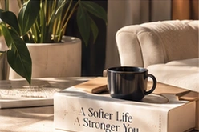
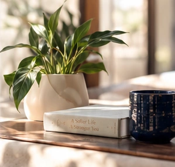

Private Coaching
Personalized support for
life’s changes, transitions, and
what comes next.
For High-Achievers
Personalized coaching to help you navigate loss and life transitions to reconnect with yourself and move forward with clarity and compassion. You will receive support that honors who you are and who you wish to become.
Request a Clarity Conversation →90 minutes • $250 • Personalized Life Map
A More Human Approach
Whether you’re navigating a personal transition,
supporting your team, or simply ready for what’s next,
The Soften Soul offers a space to pause, reflect, and
move forward with intention.
Personalized support for
life’s changes, transitions, and
what comes next.
Workplace wellbeing, grief-informed leadership, and transformative experiences for forward-thinking organizations.

A supportive space for high-achievers to feel seen, share, and grow together.
Join the Community →Who I Help
For individuals navigating grief, a major transition, or a season of uncertainty. For high achievers who are ready for more ease, joy, and connection. And for organizations that want a healthier, more supported workplace.
Amanda meets you where you are on your healing journey. Whatever you’re carrying, there is space to pause, be heard, and find your next step.
Different paths. Support that sees you.

Meet Amanda
I’m Amanda Robinson. My background spans more than 20 years in health promotion and workplace wellbeing. Today, I help individuals, high-achievers, and organizations navigate life transitions, loss, and what comes next.
My coaching draws on evidence-based approaches, mindfulness, self-compassion, and energy work, along with real-world experience, to help you feel more like yourself again — and create a life that truly fits.
“Healing is the path to your purpose.”
Kind Words
“I am extremely grateful for the time I spent with Amanda during coaching. There were times when she challenged me and the way I was thinking about various situations, which was so helpful. She pushed me to move past the narrative I had in my head and look at things differently. She also shared a variety of tools and exercises that I can use on my own beyond our time working together, which is incredibly valuable. I have seen a huge shift in how I show up for myself, both in my relationships and in regard to work.”
— Jasmine
Let’s Begin
Take the first step toward clarity, healing, and what’s next.
Same strength.
A softer way
forward.